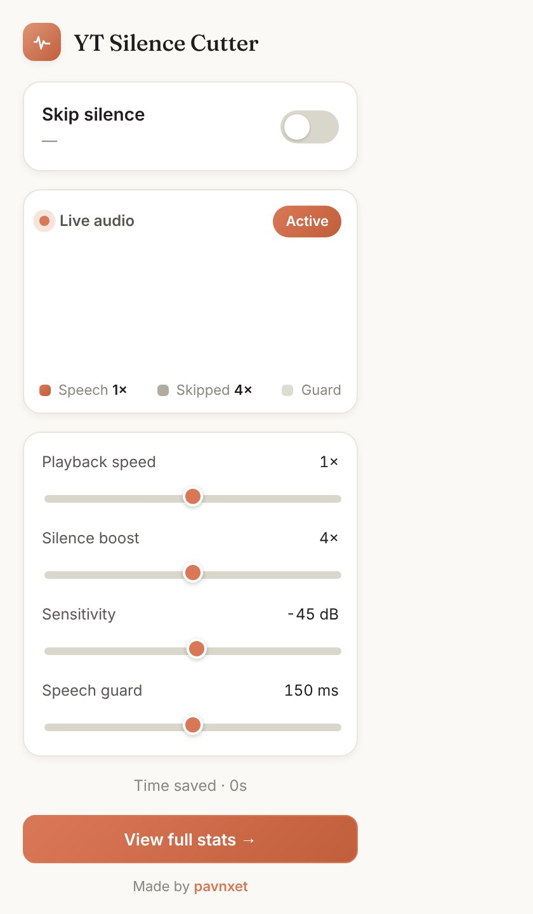
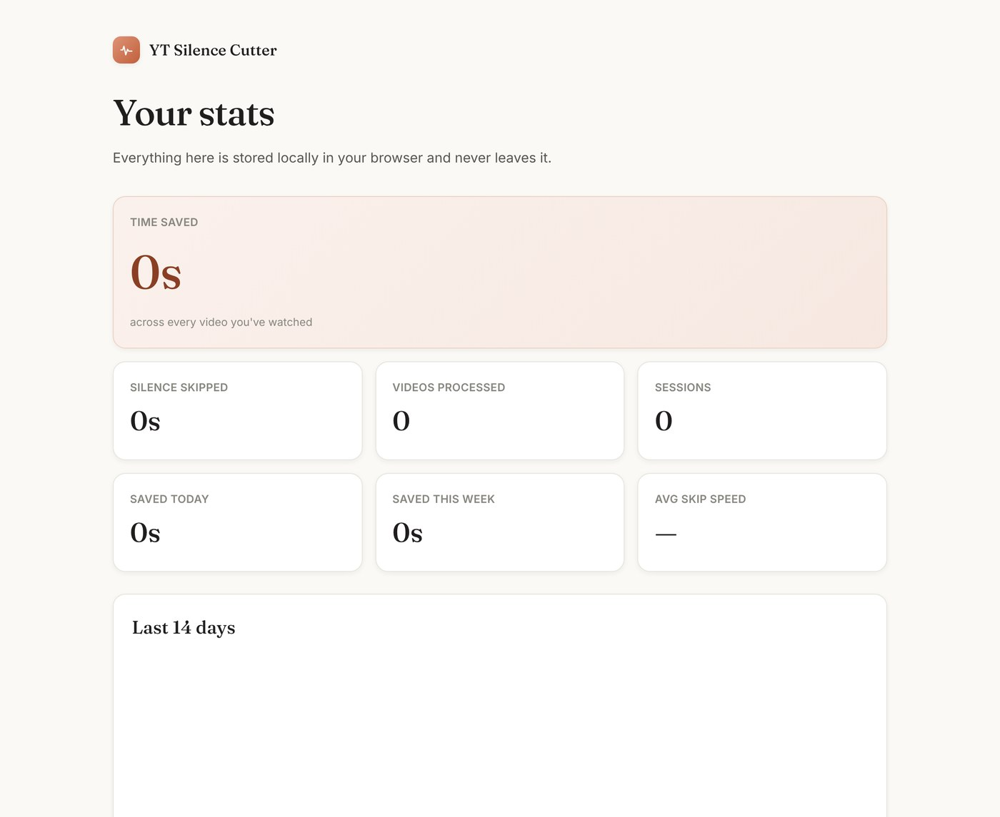

What it is
YT Silence Cutter automatically fast-forwards the silent and low-volume parts of any video you watch — right in your browser. It watches the audio of any playing <video> element, speeds through the quiet stretches, and returns to normal speed the instant speech resumes.
Despite the name, it is not YouTube-specific: it is generic HTML5-video logic, so it works on any site, handles several videos on a page at once, and keeps a separate skip state for each.

Why I built it
Lectures and long talks are full of dead air — the pause while someone thinks, the breath before a sentence, the gap between slides. Playing them at 2× rushes the parts you actually want to hear. I wanted the opposite: keep speech at a comfortable speed, and quietly race through everything else.
The controls
| Control | What it does | Default |
|---|---|---|
| Skip silence | Master on/off | On |
| Playback speed | Your base speed | 1× |
| Silence boost | Multiplier applied while skipping | 4× |
| Sensitivity | Loudness below which audio is "silence" | −45 dB |
| Speech guard | Untouched margin around speech | 150 ms |
A worked example: base 1.5× with a 4× boost plays silence at 6× and speech at 1.5×.
The speech guard
At a high skip speed the detector can overshoot into the start of a word — 50 ms of real time at 8× is 400 ms of content. The speech guard attacks this three ways: a lead-in before the fast-forward starts, a release only once the level actually reaches your sensitivity line, and an early release on a sharp rise above the recent quiet floor.
It also shrinks the sampling interval as the skip speed rises, so the detector sees roughly a constant ~40 ms of content per frame — cutting the fast-forwarded overshoot from about 120 ms at 8× down to about 70 ms. The trade-off is deliberate: a stutter mid-silence is far more noticeable than a tiny clip at the very start of a word.
Stats & privacy
Everything is local. The extension makes no network requests of any kind — there is no account, no server, and nothing is transmitted anywhere. Stats live in chrome.storage.local.

Install it
No build step — the extension is plain HTML, CSS and JS. Load it unpacked in Chrome, Edge or Brave, or as a temporary add-on in Firefox via about:debugging.